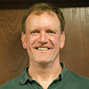

Our Coaches
Our Staff
Craftsbury Sculling Center coaches include Olympians and former World Champions, as well as coaches of some of the most competitive universities, schools, and clubs from around the world. Heading up the CSC staff are these distinguished coaches:
Troy Howell, Managing Director
Troy has been at the Outdoor Center since 2007, first as a coach, then as Fleet Manager from 2009-2014, when he became Director of Sculling Programs upon Norm Graf's retirement. Troy has been coaching rowing and sculling continuously since 1991, in varied settings from the Rivanna Rowing Club, Wichita State University, Duluth Rowing Club, Episcopal School of Dallas, Middlebury College, and here at Craftsbury. In addition ... Read more
Troy Howell, Managing Director
Troy has been at the Outdoor Center since 2007, first as a coach, then as Fleet Manager from 2009-2014, when he became Director of Sculling Programs upon Norm Graf's retirement. Troy has been coaching rowing and sculling continuously since 1991, in varied settings from the Rivanna Rowing Club, Wichita State University, Duluth Rowing Club, Episcopal School of Dallas, Middlebury College, and here at Craftsbury. In addition to managing our sculling camps, Troy also spends part of his year as one of the coaches of our resident athletes in the SBTC and GRP programs and works to ensure that our sculling programs complement one another and are consistent with the Outdoor Center's mission and philosophy. Despite being an introvert and intermittent misanthrope, he is also really funny, if you can manage to wrestle a smile out of him.
Carol Bower, Associate Director
Carol Bower took up rowing during her junior year at UCLA. In 1979, Carol was invited to try out for the US National Rowing Squad. She earned a seat in the 8+ which won a bronze medal in the World Championships in Bled, Yugoslavia. She then made the United States Olympic Team for the 1980 Summer Olympics in Moscow, but was unable to participate due to ... Read more
Carol Bower, Associate Director
Carol Bower took up rowing during her junior year at UCLA. In 1979, Carol was invited to try out for the US National Rowing Squad. She earned a seat in the 8+ which won a bronze medal in the World Championships in Bled, Yugoslavia. She then made the United States Olympic Team for the 1980 Summer Olympics in Moscow, but was unable to participate due to the national boycott. For the next three years, she was a silver medalist in the World Championships. In 1982, Carol was named "Female Athlete of the Year" by the US Olympic Rowing Committee. Bower capped her successful international rowing career at the 1984 Summer Olympics, where she won gold in the Women's 8+. Bower started her collegiate coaching career in 1980 at Yale University as the Women's Novice Coach. She then went on to become the Head Coach of the University of Pennsylvania's Women's Rowing program from 1987 to 1996. She also coached the Women’s 4+ at the 1988 Summer Olympics. In addition to her coaching experience, she worked with a group of fellow Olympians in a team-building and leadership-training company Team Concepts, Inc. Presently, Carol is the Head Rowing Coach and a Senior Lecturer at Bryn Mawr College. Bower was named to the Rowing Hall of Fame in 1984 and again in 1991.
Kevin MacDermott, Associate Director
Kevin joined the Craftsbury coaching staff in 2002, began serving as a head coach in 2005 and was named an Associate Director of the program in 2009. Outside of Craftsbury, Kevin is the Head Coach of Men's Rowing at Trinity College in Hartford, CT. Since Kevin took the helm in 2009, the program has won five Men's Team Titles at the New England Rowing Championships and three ECAC Men's team championships. In 2010-11, Kevin was ... Read more
Kevin MacDermott, Associate Director
Ric Ricci, Associate Director
Ric has coached rowing for 36 years, including 27 at Craftsbury. He rowed at Trinity College in Connecticut, winning the 2- IRA National Championship in 1972 and '73. In '72 he competed at the U.S. Olympic Trials and the '71 and '73 Henley Royal Regatta. Ric is currently the men's coach at Connecticut College. He coached at Yale and the Blood Street Sculls RC in Old ... Read more
Ric Ricci, Associate Director
Ric has coached rowing for 36 years, including 27 at Craftsbury. He rowed at Trinity College in Connecticut, winning the 2- IRA National Championship in 1972 and '73. In '72 he competed at the U.S. Olympic Trials and the '71 and '73 Henley Royal Regatta. Ric is currently the men's coach at Connecticut College. He coached at Yale and the Blood Street Sculls RC in Old Lyme, Connecticut, was the head women's coach at Rutgers from '86-88, and coached the silver medal-winning pair at the '91 Pan American Games. Ric remains an active competitor in single scull racing.
Noel Wanner, Associate Director
Noel Wanner learned to row as a walk-on at Wesleyan University, and went on to row for the US National Team as a lightweight in 1992 and 1993. He has coached crews and athletes of all ages and abilities, most recently serving for seven years as the head coach of both men and women at Middlebury College. Wanner is currently the head coach of men's rowing ... Read more
Noel Wanner, Associate Director
Noel Wanner learned to row as a walk-on at Wesleyan University, and went on to row for the US National Team as a lightweight in 1992 and 1993. He has coached crews and athletes of all ages and abilities, most recently serving for seven years as the head coach of both men and women at Middlebury College. Wanner is currently the head coach of men's rowing at Tufts University. His current athletic pursuits involve attempting to keep his two young daughters, Fiona and Zoe, out of mayhem.
Erika Sloan, Fleet Manager
Erika began rowing in 2008 at Simsbury High School in Simsbury, CT. She continued rowing at Middlebury College, where she started to pick up sculling (including a stint as a sculling intern at Craftsbury). Following graduation in the spring of 2016, Erika spent a summer sculling in Philadelphia as a member of Vesper Boat Club’s U23 team. She returned to Middlebury as the assistant men’s coach ... Read more
Erika Sloan, Fleet Manager
Erika began rowing in 2008 at Simsbury High School in Simsbury, CT. She continued rowing at Middlebury College, where she started to pick up sculling (including a stint as a sculling intern at Craftsbury). Following graduation in the spring of 2016, Erika spent a summer sculling in Philadelphia as a member of Vesper Boat Club’s U23 team. She returned to Middlebury as the assistant men’s coach for the 2016-2017 academic year, before coming to Craftsbury in the summer of 2017 to work as the Fleet Manager. Erika now works year-round at the Outdoor Center, assisting Troy in the off-season as well as serving as the Center's medical coordinator.
Craftsbury Sculling Center Coach List
Josh Accomando, Nobles and Greenough
Josh Accomando, Nobles and Greenough
Josh is Head Boys Coach at Nobles and Greenough where he also teaches in the English department. He has been rowing and sculling for the past 19 years, first learning to scull in private lessons, then rowing at Belmont Hill and for the U.S. Naval Academy in Annapolis, and returning to sculling at the Cambridge Boat Club.
Michele Africa, Humboldt Bay Rowing Association
Michele Africa, Humboldt Bay Rowing Association
Michele began rowing for Humboldt State in 1996. She continued on to medal in the single at Henley and US Nationals. She has coached at all levels of rowing from juniors to collegiate and masters. She has coached at Moss Bay, Gorge Rowing Center, Camosun College, Humboldt State and Humboldt Bay Rowing Association.
Dragos Alexandru, Sarasota Scullers
Dragos Alexandru, Sarasota Scullers
Dragos Alexandru is a former Romanian National team member from the late 1970's and early 1980's. He emigrated to the U.S. in 1984.
He served as international liaison/ Romanian team manager at the 1994 Indianapolis Worlds, 1996 Atlanta Olympics, 1999 St.Catharines Worlds and 2002 Seville Worlds.
He spent a large majority of his time for the past 33 years trying to instill the love for the sport as a coach for Sagamore R.C.(Oyster Bay, NY), Friends Academy(Locust Valley, NY), and Sarasota Scullers(Osprey, Fl-Director of Rowing 2002-2015).
It has been his vision to bring elite rowing and racing to Sarasota, Fl, after hosting the first regatta in December of 2003, on what now is called the Nathan Benderson racing course.
Lizzy Antonik, NYAC
Lizzy Antonik, NYAC
Lizzy began her rowing career in 2002 at UMass-Amherst under the coaching of Jim Dietz. After graduating in 2004, she stayed on campus to be an Assistant Coach to Dietz instructing both the novice 8+'s and varsity 4+. While working at UMass, she also assisted Dietz and Mark Wilson at the All-American Sculling Camps where she coached various levels of masters rowers in 1x's, 2x's and 4x's. In 2006, Lizzy moved to New York and joined the NYAC to pursue her own rowing goals. She has since won the National Championship and Canadian Henley in the 8+, 4x, and 2x, and has rowed at 6 national team selection events. Since moving to NY, she also has found time to coach some private sculling lessons.
PJ Antonik, NYAC, National Champion
PJ Antonik, NYAC, National Champion
PJ began his rowing career at Hofstra University in 2001 on a small 8 person club team. After graduation, he started racing for the NYAC and since then has won 5 club national championships in sculling and sweep. Through his career in New York he has appeared at 4 national team speed order events in the heavy 1x pulling a top ten finish in 2006. He has attended several national team selection regattas in the past 4 springs advancing to the B final on several occasions in the 1x and 2x. In 2004, he was a member of the NYAC lightweight 8+ at the Head of the Charles Regatta which took first place. Since then he has raced the championship 1x event every year finishing in the top 5% in 2005, 2006 and 3.1% off the winning time in 2008. Throughout his career, he has coached as a private sculling coach and masters sculling coach at the Greenwich Rowing Club, Pelham Community Rowing as well as coaching privately on his own. He has also assisted the All American Rowing camps with their programs during 3 winter training seasons in Florida.
Janet Bellantoni, Berkeley Rowing and Paddling Club
Janet Bellantoni, Berkeley Rowing and Paddling Club
Since learning to row at the University of Rochester, Janet Bellantoni has been involved in the rowing community for over 30 years as an athlete and a coach. She has coached masters, juniors, and competitive teams in clubs such as Community Rowing Inc., Riverside Boat Club, and Berkeley Paddle and Rowing Club. As an athlete, she has won major regattas such as Head of the Charles, Head of the Schuylkill, Eastern Sprints, Elite Nationals and Senior Nationals. Janet represented the U.S. at the World University Games, Canadian Henley and Lucerne Regatta. For the past 15 years she has rowed and raced master’s events in a 2x with fellow Craftsbury coach Izzie Brown. Janet is a direct descendent of the inventor of the foldable boat sling.
Peter Belmonte, Xavier High School
Peter Belmonte, Xavier High School
Peter Belmonte has been the Head Rowing Coach at Xavier High School since 2012. He graduated from Wesleyan in 2011, where he began his rowing career, rowed four years, and now serves as an assistant coach on the men's team. Peter has sculled competitively for Riverfront Recapture and more recently GMS.
Libby Boghossian, Riverside Boat Club
Libby Boghossian, Riverside Boat Club
Libby is a 2009 graduate of Brown University, where she studied biology and became a two time NCAA champion and a three time Eastern Sprints champion while rowing with the Bears. She then spent nearly a decade coaching scholastic and club rowing, in addition to teaching high school science. In 2017, she earned a Master’s degree from Harvard University while coaching the Harvard Lightweight Men. She is now working at an education-related non profit in the Boston area, and continues to row for Riverside.
Ellen Braithwaite, Open Water Rowing Center
Ellen Braithwaite, Open Water Rowing Center
Ellen learned to row as an adult at Craftsbury while she was a member of the Center's office staff in the early 90s. Sculling led to lots of new friends, and a new career. She combined teaching and administration for four years as the Director of the Open Water Rowing Center in Sausalito, California, and now specializes in teaching sculling to adults, both on the challenging water of San Francisco Bay and on various calmer bodies of water in California and Vermont. As a competitor in sprint events, Ellen has won sculling gold medals at the FISA Masters Worlds, as well as U.S. Rowing National and Regional regattas. She competes in long distance events in the ocean as well as on lakes and rivers, and though she has medaled in the Monterey Bay Crossing, the Catalina Crossing, marathons in Ottawa, Vermont, and California, and the North American Open Water Rowing Championship, she believes strongly in the satisfaction of modulated participation.
Erik Breiland, Green Mountain Rowing, president
Erik Breiland, Green Mountain Rowing, president
Erik rowed sweep at Rensselaer Polytechnic Institute from 1994-1998. He started sculling on the Merrimack River in the summer of 1995 and continues to scull in Vermont on the Lamoille River. He coached women's novice crew at the University of Vermont in 2000 and took the novice eight to their first berth in the petite final at the New England Rowing Championships. Competitively, Erik has medaled in sculling boats at the Head of the Charles, US Nationals, Canadian Henley, and more prestigious races such as the Green Mountain Head Race and Black Fly Regatta. He encouraged his mom to start rowing back in 2001 and she still races today. His newest challenge is teaching his sweep-rowing wife, Meredith, to scull. He is the founding president of Green Mountain Rowing in the greater Burlington, VT area. Erik has been a coach at Craftsbury since 2002.
Meredith Breiland, Concept2
Meredith Breiland, Concept2
Meredith's rowing career began in high school at Norwalk River Rowing Club (CT) and continued at Cornell University (1997-2000). After taking years off to compete in triathlons and marathons, Meredith returned to rowing both professionally and personally. Meredith has worked at Concept2 since 2007 in Marketing, New Customer Development. She has coached youth, club and masters athletes. Meredith and her husband (and fellow coach) Erik scull on the Lamoille River in Vermont.
John Brisson, NYAC
John Brisson, NYAC
John started rowing in 1973 at SUNY Stony Brook and has never stopped. John began coaching at Craftsbury in 1978 and thereafter competed at the 1980, ’84 and ’88 Olympic trials, won several national championships, Canadian Henleys, and many other races too. John retired his law practice in 2011 but not from coaching. He has coached at the High School, elite, pre-elite, Collegiate and masters levels. John is currently coaching at the NYAC, guest coaching at clubs, and still comes to Craftsbury where his love for the 1x can flourish as he teaches people of all levels to row it better.
Izzie Brown, Berkeley Paddle and Rowing Club
Izzie Brown, Berkeley Paddle and Rowing Club
Izzie learned to scull at Craftsbury in 1984 after rowing at Northfield Mount Hermon and then at Rollins College. With 31 years of rowing and coaching experience (Craftsbury, Florida Rowing Center, Mount Holyoke College, and Temple University), she now teaches sports nutrition at San Jose State University. Her graduate research examined 2000m racing and low verses high carbohydrate ingestion. In December 2011, she published the Boathouse Row Cookbook as a fundraiser for Fred Duling, Sr.
Landon Carter, Marin Rowing Association
Landon Carter, Marin Rowing Association
Landon Carter only started rowing at the age of 48, deciding to do this sport right by getting coaching. He won the US Masters Nationals in the single after one year and has continued to win at the National and International level since that time. He has won Masters Henley, The World Masters Games, FISA Masters, and The Head of the Charles all several times as well as many other races. He attributes his success to not only hard work, but getting some of the best coaching in the world from people like Dickie Gerrard in Australia, Dick Tonks in New Zealand, Xeno Muller, Buzz Congram, Gordon Hamilton and a host of others. He is a method coach with a keen eye for how to make the stroke more efficient and enjoys coaching all levels of scullers.
Doug Connelly, University of Vermont
Doug Connelly, University of Vermont
Doug Connelly began rowing in 1995 at Colby College and has been coaching or teaching ever since. He currently is the Head Women’s Coach at the University of Vermont, and has previously coached at Ohio State University and Franklin Pierce University. Recent Vermont highlights include a WV4+ gold medal at the 2013 ACRA National Championships and a WN8+ medal-winning performance at the 2013 New England Rowing Championships. Doug sculls with the Green Mountain Rowing Association, competing at the Head of the Charles and other events. Off the water, his favorite thing to do is ski powder with his wife, Liz, and dog, Montana.
Maura Conron, Cambridge Boat Club
Maura Conron, Cambridge Boat Club
Maura began rowing at Brown University and Narragansett Boat Club and now sculls out of Cambridge Boat Club in Cambridge, MA. Maura has coached sculling and sweep at CRI, Riverside and elsewhere. She was Co-Race Director of the Head of the Charles Regatta in 2013 and 2014, the 50th running. Maura works full time as a graphic designer and artist.
Caleb Corliss, Tabor Academy, Wesleyan
Caleb Corliss, Tabor Academy, Wesleyan
Caleb spent his rowing career at Tabor Academy and Wesleyan University. He began coaching with Nashville Rowing, working with novice women and bringing a pair to Youth Nationals. Currently, he is an assistant coach and science teacher at St. Mark's School in Massachusetts, where he lives with his wife Audrey, a Vermonter, and their dog Pip, a Swedish vallhund. This is Caleb's sixth summer at Craftsbury, returning for the first time as a coach.
Steve Dani
Steve started rowing at St. John's H.S. in Shrewsbury, MA. He continued at Boston College where he was captain his senior year. Steve moved out to Seattle and learned to scull from Frank Cunningham, Bill Tytus and Emil Kossev. Halfway through law school he transitioned from scull to coaching launch, helping Emil coach elite athletes. Since then Steve has coached junior rowers at Green Lake Crew, Pocock Rowing Center and the Newport Aquatic Center. His junior crews have earned 8 medals at Youth Nationals and many have gone on to compete for the junior and U23 national teams. Steve has also coached collegiately at Boston College, Cornell University and University of San Diego. He has been named as a coach to the senior national team in 2009, 2011, 2012 and 2013. In 2014 Steve coached the SBTC group at Craftsbury, including the mens' 2x that competed at U23 World Championships.
Ben Dann, Craftsbury Green Racing Project
Ben Dann, Craftsbury Green Racing Project
Ben began sculling in 2004 at Maritime Rowing Club in Norwalk, CT. He attended Brown University, where he concentrated in Urban Studies and rowed on the varsity team. He has two medals at Youth Nationals in the quad (including one gold), three Eastern Sprints titles in the 1F, 2V, and 1V repectively, and 3 medals at IRA's. Since college, Ben has been a GRP athlete, attempting his "PhD" in rowing. He has been a national team member since 2010, representing several different boat classes at both U23 and senior team levels.
Terry Davison, SORA
Terry Davison, SORA
Terry is a retired British Police Officer with a lifelong involvement in fitness and coaching. He came to rowing ten years ago through his two sons’ involvement in the sport. He coached both, with his younger son Ben excelling in single sculling, including national championships at both the junior and U23 level, winning the petite final in the 1X both in Plovdiv 2015 and Rotterdam 2016, and most recently stroking the Craftsbury Green Racing Project’s Olympic Trials champion 4X, earning his first senior national team berth. Terry has an infectious enthusiasm and genuine passion for rowing and especially for sculling. Terry has coached both high school and masters scullers, from novice to elites. He is presently the head coach of the rapidly developing South Orlando Rowing Association.
Lauren Day, Orlando Rowing Club
Lauren Day, Orlando Rowing Club
Lauren is currently the sculling coach for South Orlando Rowing's middle school program as well as a master's coach for Orlando Rowing Club. She got her start rowing at Lyman High School in central Florida. She rowed for the University of Florida in college and has won numerous state, regional, and national championships in small boats. Her passion is teaching healthy lifestyle choices to kids through rowing. She is extremely excited to be part of the Craftsbury team this summer!
Diane DeLuca, Michigan State
Diane DeLuca, Michigan State
Diane DeLuca began rowing at Michigan State's club program; competing in regional races, the Dad Vails, and the Head of the Charles. She continued rowing after college in Philadelphia at The Vesper Boat Club; competing in regional regattas, Club and Elite National Championships, and the Canadian Henley. She has also raced in Mexico City and rowed in Florence Italy under the Ponte Vecchio.
Diane started coaching when the Fairmount Rowing Club ( Philly) needed a summer coach for their novice junior boys. That was over 20 years ago, and she has been coaching ever since.
Diane is a volunteer coach at Michigan State, and a regatta volunteer for the Knecht Cup and San Diego Crew Classic.
Dick Dreissigacker, Founder of Concept2, Olympian
Dick Dreissigacker, Founder of Concept2, Olympian
Dick started rowing at Brown University. He then trained at Vesper Boat Club and was a member of the U.S. National Team from 1970 through 1972. During this time, he competed at the Pan American Games in 1971 and the 1972 Olympics. He coached the Stanford University Men’s Crew for three years (1974-76). In 1976, Dick and his brother, Pete, founded Concept2 and began producing Dreissigacker Racing Oars. In 1981, they introduced the Concept2 Rowing Ergometer. Concept2, located in Morrisville, VT, continues to provide oars and ergs to rowers around the world. Dick competes several times per year, both in his single and in the Motley Rowing Club eight.
Emily Dreissigacker, Dartmouth
Emily Dreissigacker, Dartmouth
Emily is a four-time New England Junior Olympic Nordic skier and an Assistant Coach for the Craftsbury Nordic Ski Club. She is currently a member of Dartmouth Varsity Crew and coaches the Craftsbury Youth Rowing Club.
Kate Erickson, The Hill School
Kate Erickson, The Hill School
Kate Erickson learned to row somewhat later in life as a PhD student at Oxford University, where she joined her college's intramural team in exchange for the promise of a free hamburger on the tryout day. She went on to row for the Oxford University Women's Boat Club for three varsity seasons between 2015 and 2018, and raced in three separate Oxford-Cambridge boat races as a member of the lightweight spare pair, openweight 2V, and openweight 1V, respectively. Kate learned to scull at Craftsbury in 2015 and quickly developed a love for single sculling; she finished out her collegiate career by making grand final appearances in the 1x at numerous major European regattas, including Ghent and the British Universities Championship Regatta, in 2018. She recently completed a PhD in African History and currently coaches high school crew at The Hill School and Owen J. Roberts High School, both in Pottstown, Penn.
Kristen Erickson, Greenwich Academy
Kristen Erickson, Greenwich Academy
Kristen has coached for many years at Greenwich Academy, a private girls’ school in Connecticut, where she teaches history and art history and serves as an upper school dean. She began her rowing career at University College, Oxford in 1990 and went on to row and compete with Kingston Rowing Club in London, Norwalk River Rowing Club, and Greenwich Crew. At Norwalk, she developed and helped coach the women’s crew program, also serving on the club’s board of directors. Kristen has run summer rowing camps for kids and given many private lessons over the years. She taught both her sons and her parents to row, and now competes at the masters’ level in the lightweight single and double.
Maggie Fellows, Craftsbury Green Racing Project
Maggie Fellows, Craftsbury Green Racing Project
Maggie Fellows came to Craftsbury in 2013 to join the Small Boat Training Center program and subsequently the Green Racing Project. She graduated from St. Lawrence University, where she rowed on the varsity squad for four years. In her first year training at Craftsbury, Maggie won gold in the 2013 Canadian Henley U23 single and was 2nd in both the U23 double and pair. More recently, she was 3rd in the 2014 Championship single at Canadian Henley. She also coaches the Craftsbury Community Rowing program.
Sara Field Gronewold, Ann Arbor Rowing Club
Sara Field Gronewold, Ann Arbor Rowing Club
Sara is the Director of Rowing Programs at the Ann Arbor Rowing Club. She learned to row at Boston University and was a member of BU's Eastern Sprints and National Championship crew in 1992. After college, Sara raced on the United States Rowing Team from 1996-2000, and is a lifetime member of Vesper Boat Club and Pennsylvania Athletic Club. She has been coaching at Craftsbury since 2002.
Jen Forbes, Georgetown University
Jen Forbes, Georgetown University
Jen attended Northeastern University from 2008-2011. She is a former U.S. National Team athlete and is currently an Assistant Coach at Georgetown University for both the women’s open and lightweight programs.
Will Forteith, Hockaday School
Will Forteith, Hockaday School
Will began rowing at St. Mark's School of Texas in Dallas where he raced quads, doubles, and singles. During high school, he came to Craftsbury twice as a camper, and his Vermont experiences resulted in a lifelong affinity for New England rarely found in those born elsewhere. He did his university rowing at Cornell on the men's lightweight team. From 2000-2002, Will was the assistant men’s crew coach at Choate Rosemary Hall in Connecticut. In 2003, Will returned to his alma mater, St. Mark's, where he served as the Assistant Head of Middle School for five years and the Head Rowing Coach for eight years. From 2012-2015, Will served as the Middle School Principal at The Walker School outside of Atlanta and coached rowing at multiple clubs, including Atlanta Junior Rowing Association, Atlanta Rowing Club, and Peachtree City. Will earned his M.Ed from Teachers College at Columbia University in May 2016, and he served as the Director of Rowing Programs at Blair Academy beginning in the fall of 2017. In the fall of 2018, Will and his family returned to Dallas, where he is teaching and coaching sculling at The Hockaday School.
Jeanne Friedman, Mount Holyoke
Jeanne Friedman, Mount Holyoke
Jeanne Friedman is a USRA Level III certified coach, and has been involved in sculling since 1975. During her tenure as head coach at Mount Holyoke College (1992-2014) she led the team to four Seven Sisters Championships, two NEWMAC Championship, and numerous medals at the ECAC and New England Championships. In 2009, she was inducted into the Philadelphia Jewish Sports Hall of Fame. Coach Friedman believes in the importance of a holistic approach to rowing - mental training as well as physical.
Judy Geer, Concept2, Olympian
Judy Geer, Concept2, Olympian
Judy started rowing competitively at Dartmouth College and went on to row with the U.S. National Team from 1976 through 1984. She was a member of the 1976, 1980, and 1984 US Olympic Rowing Teams, competing in the Four, Double and Double -placing up to 5th. She coached at St. Paul's School for one year, and coached the Dartmouth Women's Crew for two years. She has coached at Craftsbury Sculling Camp every summer since 1986. She continues to compete a couple times per year, and is the current Record Holder for the 50+ women's single at the Head of the Charles. Judy works for Concept2.
Larry Gluckman, Princeton, Dartmouth, Trinity College
Larry Gluckman, Princeton, Dartmouth, Trinity College
Larry’s love for rowing blossomed at Northeastern University under the direction of Coach Arlett. Before graduation, Larry earned a seat in the Vesper coxless 4+ that captured the bronze medal at the World Championships in Vichy, France. Following graduation and an assignment in the Peace Corps, Larry resumed his international racing career, making the National Team for the World Championships in 1973, 1975, and the 1976 Olympic Team. Larry’s coaching career began at Columbia University as Head Coach of Crew. He then returned to Northeastern University as Assistant Coach. In 1980, Larry was named Head Coach at Princeton University. There, his crews battled for top honors in the EARC. Next, Larry took command of the Dartmouth program. He also worked for Concept2 as a Marketing Representative, until he took the position of Men’s Head Coach at Trinity College in Hartford, CT, leading it through a very successful six years that included DIII National Championships, a Henley Royal Regatta Temple Cup Trophy and HOCR Collegiate 8+ victories. In 2009, Larry and his wife Sara moved to Glover, VT, whereupon he started the Small Boat Training Center at Craftsbury, which developed into the GRP. During his years leading the elite rowing programs at Craftsbury, he placed numerous crews on the USA U23 and Senior National Teams. Other international coaching efforts have included: Assistant Coach for the 1979 Pan American Team, 1980 Olympic Coach for the women’s double-scull and coxless pair, 1981 World Championship women’s coxed four and 1984 Olympic women’s coxed four. Larry has been involved at Craftsbury since the late ‘70s.
John Graves, Trinity College, Craftsbury Green Racing Project
John Graves, Trinity College, Craftsbury Green Racing Project
John Graves graduated from Trinity College, Hartford, CT in 2010. While at Trinity, he was a two-sport athlete and served as captain of both the soccer and rowing teams. John rowed on the 2009 U23 National Team in the Men’s Pair, 2010 U23 National Team in the Lightweight Single, and the 2011 World Cup Squad in the Lightweight Single. He competed at the 2012 Non-Qualified Olympic Rowing Trials in the Lightweight Double, and is currently training as a member of Craftsbury’s Green Racing Project.
Peter Graves, Craftsbury Green Racing Project
Peter Graves, Craftsbury Green Racing Project
Peter has been sculling since he was introduced to the sport before birth by his Dad. He rowed for Cincinnati Country Day School and Trinity College. During college, Peter was a two-time captain and won the Henley Royal Regatta in 2005. After college, Peter began to train for the Olympic Trials in the Double with his older brother Tom. They placed 2nd at the Olympic Trials by one second, thus sending Peter on a far longer journey than he ever would have imagined- a pure quest for speed. Since then Peter has sculled on 5 national teams including the 2012 Olympic Team. Peter has been an athlete with the Craftsbury Green Racing Project for the past 3 years. He was part of the 2014 USA Men's 4x that was comprised entirely of Craftsbury athletes and won a bronze medal at the Lucerne World Cup. Most recently, he was part of the 2016 Craftsbury/USA M4x that won Olympic Trials and narrowly missed out on qualifying for the Rio Olympic Games.
Mark Grinberg, West Cambridge Rowing
Mark Grinberg, West Cambridge Rowing
Mark Grinberg is the head coach at West Cambridge Rowing in Cambridge, MA. The 2014 USRowing Fan's Choice Coach of the Year, his focus is on developing the individual athlete through a focus on small boats and sculling. Mark has coached athletes to top finishes at USRowing Youth Nationals and Head of the Charles. His former athletes row at some of the top rowing programs in the country.
Phil Grisdela, Craftsbury Green Racing Project
Phil Grisdela, Craftsbury Green Racing Project
Phil learned to row with the Thomas Jefferson High School team in Alexandria, VA in 2004. He rowed at Dartmouth for the lightweight varsity, earning three second place and one third place finish at the Eastern Sprints and IRA regatta. Phil has represented the U.S. in the U23 men’s lightweight pair and senior men’s eight in 2011 and 2012, earning 9th place both times. This is Phil’s third year at Craftsbury with the Green Racing Project. Phil regularly coaches with Craftsbury’s Community Rowing.
Patrick Guelakis, Choate Rosemary Hall
Patrick Guelakis, Choate Rosemary Hall
Patrick is returning for his eighth year as a Craftsbury coach. A 2003 graduate of Trinity College, Pat coached for two years at Connecticut College under the direction of Ric Ricci. In these two years, the first novice fours were undefeated and novice team took gold in three events in the New England Fours Championships. Pat rowed for four years with the Bantams, competing in the NESCAC under the direction of coaches Stew Stokes and Steve Fluhr. He then coached at Worcester Polytechnic Institute for five years as the Assistant Varsity Coach while teaching physics at Worcester Academy and earning his Master’s in electrical engineering. He is currently Head Coach for the boy’s team and a physics teacher at Choate Rosemary Hall in Wallingford, CT.
Ed Gunter, Michigan State University
Ed Gunter, Michigan State University
Ed has been involved with rowing for over 20 years and currently works at Michigan State University serving as a boatman for the women’s program and coach for the men’s program. He coaches sculling locally at the Lansing Rowing Club. His previous experience includes coaching and directing 501c3 rowing programs as well as licensed refereeing and event management. He has a Master’s in Exercise and Sport Science.
Molly Hamrick, Riverside BC
Molly Hamrick, Riverside BC
Molly began rowing in 2005 at Plant High School in Tampa, Florida. She has competed on several U.S. Junior and Under-23 teams in both sweep and sculling events, winning two world championships with the junior women's 8+ in 2008 and 2009. A 2012 Craftsbury U23-SBTC and 2013 Princeton University alumna, Molly currently trains in Boston with Riverside Boat Club, where she also coaches junior girls.
Phil Henson, Craftsbury Green Racing Project
Phil Henson, Craftsbury Green Racing Project
Kate Hoff Shutta, Northfied Mount Hermon
Kate Hoff Shutta, Northfied Mount Hermon
Kate is a convert to rowing - she grew up Nordic skiing in Minnesota, but when she moved to MIT for college, Nordic wasn't an option, so she learned to row as a walk-on there. The sport quickly became her passion. After graduating from MIT in 2008, she spent several years training and competing in the women’s single, double, and quadruple lightweight sculls out of the University of Wisconsin-Madison, the Marina Aquatic Center in Los Angeles, Vesper Boat Club in Philadelphia, the San Diego Rowing Club, and the Potomac Boat Club in DC. Kate has been coaching sculling and sweep rowing at the junior level since 2010 and working at Craftsbury since the summer of 2013. She believes in the importance of each athlete understanding the scientific fundamentals of physiology, nutrition, and sports psychology in order to reach their highest potential.
Kimberly Howell, Feldenkrais Practitioner
Kimberly Howell, Feldenkrais Practitioner
With over two decades of bodywork experience, Kimberly excels at helping people release tension, move with greater ease and less discomfort, and increase their bodily awareness. In a four year training program that began in 2012, Kimberly greatly expanded her skills as she delved into the Feldenkrais Method, a practice based on decades of research in physics, neuroscience, biomechanics, learning theory, and human development.
Jim Lauderdale, St. Paul's School
Jim Lauderdale, St. Paul's School
Jim learned to scull at Craftsbury approximately 25 years ago and had been the boatman at Saint Paul’s School in Concord, NH for the last 18 years. Jim has extensive experience rowing and coaching small boats (pairs, doubles and singles), as well as teaching individuals to row. Jim has been running an eights program for the Advanced Study Program at St. Paul’s School for many summers, and has worked with many novice scullers plus some national and international competitors. Jim introduced one world cup champion single sculler, Jamie Koven, to sculling.
Pat McDonough, Fort Worth Rowing Club
Pat McDonough, Fort Worth Rowing Club
Pat has rowed continuously since joining the freshman crew at the University of Wisconsin in the fall of 1984. He was in the IRA-winning first freshman 8+ in 1985 and 2V 8+ in 1986 and served as men's team captain for the 1987-88 season. Pat coached masters and juniors at Mendota Rowing Club in Madison, WI for a year after college before moving to Texas and coaching juniors and masters for Austin Rowing Club. He has raced primarily in sculling boats for Fort Worth Rowing Club since 1996 but also for a Rolodex of open and masters teams from Austin, Dallas, Denver, Madison, Minneapolis, and Detroit, as well as clubs in England and Scotland.
Krystal Melendez, Dartmouth College
Krystal Melendez, Dartmouth College
Krystal began rowing at Middlebury College her freshman year under Noel Wanner, captaining the team her senior year. Her first time sculling was at a Craftsbury program during her sophomore year of college. She went on to participate in several u23 camps and east coast speed orders, and continued to train with GMS's high performance sculling team in Connecticut after graduation. She coached a wide age and ability range of scullers while at GMS along with the local boarding school, Canterbury High School. She then moved to Philadelphia and coached with Conestoga High School as a varsity assistant and head novice coach. This past year she was a full time volunteer coach for Dartmouth Lightweight Men, under Dan Roock, before transitioning to Varsity Women’s Assistant for the Dartmouth Women. In her spare mornings, she also coached with the masters UVRF group out of Hanover, NH. She recently became a certified massage therapist and loves thinking and talking muscles, tissues, and layers of the body!
Austin Meyer, Harvard
Austin Meyer, Harvard
Austin began rowing in Albany, NY for Shaker High School in 2005 and has competed with the U.S. Junior, U23, and Senior National Teams in both sweep and sculling events for the past five years. He won a bronze medal in the 2010 U23 World Rowing Championships in the lightweight men’s four and placed fourth at this year’s U23 World Rowing Championships in the lightweight men’s double. Austin currently rows for Harvard University, and is in his final year of school studying energy and public policy.
Justin Moore, Syracuse University
Justin Moore, Syracuse University
Justin Moore has coached at both the collegiate and international level for the past 25 years, first with Yale (Heavyweight Men, Assistant Coach), then Williams College (Women’s Head Coach 1999-2010), and as Head Coach of Women’s crew at Syracuse (2010-present). Coach Moore’s 1996 Yale freshman crew won the Eastern Sprints, helped complete a sweep of Harvard at the annual boat race, and won the Temple Challenge Cup at the Henley Royal Regatta. His Williams women won six national championships in nine years, including five consecutively. Under his leadership, Syracuse’s women have risen from a national ranking of 50th in 2010 to 13th in 2016. Internationally, Justin has coached both the U.S. Junior and U23 women’s teams, leading the U.S. Junior women to their first-ever multiple medal performance at Worlds in 2010 (8+ and 4-) and the U23 team, which won gold in Lithuania by open water in 2012. Small boat training has been central to Coach Moore's methodology, particularly in coaching the U23 development program. Justin was named 2017 Coach of the Year.
Lisa Moore
Lisa began rowing, her Junior year at McGill University and in her short but intense, rowing career won thirteen club and elite national titles and in the U.S. and Canada, and represented the US team in the lightweight single at the 92 world championships and as an alternate to the silver-medal winning lightweight double in the 96 Olympic Games. She has spent most of her time sculling, and includes the HOC as her favorite all-time race, having won the lightweight single once, and finishing in the top five each of the six years she raced in that event. She also spent a few years pursuing long course and Ironman distance triathlons, finishing fourth at the Long Course World Championships in 2001. Since 2008, her focus has turned to her career and family, raising two children who love to swim and play soccer while helping to grow a business that focuses on specifying healthier materials for high performing building products. While her on water pursuits have been limited, she still rows the erg, runs, bikes etc, and also spends significant time discussing rowing and watching videos of rowing with her husband (and full time rowing coach) of 17 years, Justin Moore.
Al Morrow, AMP Rowing, former National Team Coach, Canada
Al Morrow, AMP Rowing, former National Team Coach, Canada
Al Morrow rowed for 11 years and was a member of the Canadian National team six times at 2 Pan American Games, 3 World Championships and one Olympics. Al has coached rowing since 1976 at all levels. He has been a Head Coach at the University of British Columbia, University of Victoria, Western University and the Canadian National team. Crews that he has coached have won medals at many international events including 4 Gold, 1 Silver and 3 Bronze at the Olympic Games.
Alexandra Morss, Princeton
Alexandra Morss, Princeton
Alex began rowing as a sophomore at Groton School in 2007. She then rowed for the Princeton
lightweights for four years, winning Eastern Sprints in 2011 and serving as
captain her senior year. She sculled for the U23 National team in the
lightweight single (2012) and lightweight double (2013). Following graduation,
she trained at Vesper Boat Club and SoCal scullers. She began coaching in 2016
as a volunteer assistant for the MIT openweight women, then was an assistant
for the Nobles and Greenough girls and the Cambridge Boat Club juniors summer
program. Currently, she is the assistant coach for the Princeton Lightweight
Women.
Jonathan Moss, Pioneer Valley Riverfront Club
Jonathan Moss, Pioneer Valley Riverfront Club
Jonathan Moss learned to row with the Wesleyan University Crew where he later became Assistant Coach. He has since instructed many youth and club masters. He was a member of the U.S. Lightweight National Team for four years. During his rowing career, Jonathan won gold medals at FISA World Championships, Pan-American Games, U.S. National Championships, Canadian Henley, and several large head races including the Charles, Connecticut, Housatonic, and Green Mountain. Jonathan is founder and President of the Pioneer Valley Riverfront Club, a 501(c)3 organization in Springfield, MA trying to grow river activities on an under-utilized part of the Connecticut River. His other athletic pursuits have included two Boston Marathons and competing in his first ½ Ironman Triathlon in July 2010.
Brendan Murphy, Trinity College
Brendan Murphy, Trinity College
Brendan began his rowing career at the NYAC as a junior athlete and was later recruited to Syracuse University. Brendan has coached at various programs including James Madison High School, Christian Brothers Academy and Cornell University. Additionally, he helped build the USRowing Junior National Team Mid-Atlantic Small Boat Development Camp in Northern Virginia and currently serves as the assistant men’s rowing coach at Trinity College.
Greg Myhr, St. Joseph's University
Greg Myhr, St. Joseph's University
Greg began rowing in high school in the Washington, DC area before heading to the University of Wisconsin, where he served as the captain his senior year. After several years of post collegiate training and racing, he returned to Wisconsin where he embarked on a now 20+ year collegiate coaching career. He has been an assistant at Wisconsin and Georgetown, and a head coach at George Washington and the University of Pennsylvania. Over the years, Greg has worked with multiple athletes that have gone on to compete at the U23 and Senior World Championships, the Boat Race, and the Olympics. Currently, he serves as the interim assistant coach at St. Joseph's University in Philadelphia Greg learned to scull while in high school (aided by an early career visit to Craftsbury) and has competed throughout his career.
Daniela Nachazelova, Czech Republic
Daniela Nachazelova, Czech Republic
Daniela Nachazelova is a former U23 Lightweight Sculler Champion from Prague, Czech Republic. She has been part of the Czech National Team for the last fifteen years. Daniela has been coaching at Craftsbury on and off since 2005 and was part of the SBTC program. Daniela holds different coaching licenses for rowing from these federations: US Rowing, Canada Aviron Rowing and Czech Rowing. She owns her rowing company, Rowline, that provides rowing equipment for rowers in Central Europe. Daniela enjoys rowing, cycling, yoga, and reading. She is also studying for her Master's degree in Marketing and writes about rowing for different Czech magazines.
Hank Osborn, Columbia University
Hank Osborn, Columbia University
Hank was a standout high school rower at Tabor Academy, leading the team through several successful seasons until his graduation in 1991. He continued rowing at Rutgers, stroking the varsity heavyweight eight for much of his career, and led an elite 4+ to an appearance at Henley in 1994. In 1995, Osborn began his coaching career at Tabor, where he was Head Coach of boys crew and Director of the Tabor Academy rowing program. Osborn was instrumental in Tabor’s rise as a rowing power in New England and coached the team to their first ever undefeated New England Championship season in program history. Over the years, his crews won several New England medals, including their first gold in 45 years. He also brought crews to at the Henley Royal Regatta on three occasions, reaching the finals of the Princess Elizabeth Cup in his final year. Two racing shells at Tabor have been dedicated in his name. Osborn also served as the summer coach of the Dartmouth College men’s heavyweight varsity from 2000-2004, leading the Big Green varsity eight to the gold medal at Canadian Henley – the first ever for the Dartmouth Heavyweights. He joined the Columbia University coaching staff in 2003 and led the Lion freshman to their first winning season in many years. In 2002, Osborn was selected as a full member of the Leander Club, located at the Henley Royal Regatta course. Hank learned to scull at Craftsbury in 1988 and began coaching at Craftsbury in 1992.
Katie Ouellette, Farmington Valley Rowing Association
Katie Ouellette, Farmington Valley Rowing Association
Katie has been rowing for 14 years starting as a novice at Farmington High School in Connecticut. She went on to row at Mount Holyoke College and was a 2 time recipient of the Holly Metcalf Team Award, awarded to a team member dedicated to the pursuit of excellence in rowing. Katie currently coaches, and rows competitively, for Farmington Valley Rowing Association in Windsor, CT. She works with beginning athletes all the way up through masters racing teams, in both sculling and sweep boats, through clinics, practices and private coaching lessons.
Henry Palmer, Union Boat Club
Henry Palmer, Union Boat Club
Henry began sculling in 1999, here at Craftsbury. Sculling provided the backbone for his rowing career at St. Andrews School, Trinity College, and ultimately Leander Club. Henry has been the Head Coach of Union Boat Club since 2011, where he continues to scull in his free time. His most notable races include three Head of the Charles championships, three wins at the Henley Royal Regatta, and a Head of the River win.
Naomi Patino
Naomi did her college rowing at Boston University, then went on to win several U.S. National Championships in sculling events. She has coached at Drexel University in Philadelphia, PA, and was the director of the Florida Rowing Center for five years. Naomi also competed as a pro in-line speed skater, winning many long distance races. Since 2013, Naomi has been a working as a certified personal trainer in New York City. Her specialties include corrective exercise, training for competition, and pre/post-natal training.
Roger Payne, University of Virginia
Roger Payne, University of Virginia
Roger brings 40 years of rowing and coaching experience to Crafstbury. He rowed at the University of Washington, sculled at Lake Washington RC, winning 4 Canadian Henley golds in the Lt 2X, worked for both Pocock Racing Shells and Owen Racing Shells, and coached at Lake Washington, Seattle Pacific, Oregon State, Wisconsin, and Virginia. He has coached at numerous USRowing development and selection camps for Jr. and Sr. men and women, sweep and sculling. Roger has worked with several national team and Olympic scullers, most recently with the bronze medalist Paralympic LTA 2X. He is currently boatman at University of Virginia, and works with scullers at Rivanna RC and Cavalier Rowing Camp.
Bob Reichart, Capital Rowing Club
Bob Reichart, Capital Rowing Club
Bob Reichart coaches masters sculling at Capital Rowing Club in Washington DC, where he has been coaching since 2014. Bob learned to row and compete as a lightweight at Trinity College in Hartford, Connecticut (Class of '84). He has rowed with the Bantam, Minnesota and San Diego Rowing Clubs, and is Captain for the “ARIEL TOY” Virtual Rowing Team during the Concept 2 January Virtual Team Challenge. Today, he rows and competes for both Capital Rowing Club and Chinook Performance Racing, and has medaled at the US Rowing Masters National Championships, FISA World Masters Regatta, and the Head of the Charles.
Gary Reid, Concept2 New Zealand
Gary Reid, Concept2 New Zealand
Gary started rowing at age twelve, encouraged by his father who had coached three New Zealand Olympic teams. He rowed for New Zealand in the 1980’s, including as the single sculler at the 1984 Olympics in Los Angeles. Gary has been Concept2’s New Zealand distributor since 1995 and has participated in the CRASH-B’s many times. In his role with Concept2 and CRASH-B, he has been involved in the training of such New Zealand athletes as Rob Waddell and Caroline and Georgina Evers-Swindell. Gary still actively trains in the single and on the C2 ergometer.
Nicole Ritchie, Vesper Boat Club, Temple University
Nicole Ritchie, Vesper Boat Club, Temple University
Nicole Ritchie started rowing as a high schooler in Putney, VT, spending time in small boats and racing the Green Mountain Head regatta. She then rowed for Bates College as the team made their first DIII NCAA appearances and second place performance as a team in 2009. After college, Nicole moved to Philadelphia to train at Vesper Boat Club. Nicole trained at Vesper for 7 years, competing in National Selection Regattas in 1x's and 2x's, the Henley Royal Regatta in the 4x, and qualifying for the Pan American team in 2014, and winning a silver medal in both the double and the quad. Most recently she finished 2nd place at the 2016 Olympic trials in the Women's Double. She has coached at several different rowing programs in Philadelphia, including Philadelphia City Rowing, Bachelors Barge Club, and for the past two years as a graduate assistant for Temple University's women's rowing team while getting her Masters in Education. In her spare time, Nicole loves XC Skiing and also bananagrams.
Dan Roock, GRP Emeritus
Dan Roock, GRP Emeritus
Dan Roock has been coaching since the mid-80s. His career started at Florida Institute of Technology, before extended involvement with Princeton University, including six years at the helm of the women's rowing program where the Tiger 1V went 59-2 in dual races with multiple EAWRC and National Championships. He spent the next 12 years at Cornell as Director of Rowing and Men's head coach, during which time the Big Red's men's 1V was a mainstay of the national top ten. Dan led the lightweight men of Dartmouth with the LM1V medaling at the EARC Sprints and IRA’s in 2011 and 2012.
Dan has extensive experience in a variety of USRA National Team postings at the Junior, U23, and Senior levels, including winning gold and bronze medals with the Men's U-23 8+ (then Nation's Cup), and winning a gold and silver medal coaching Junior Men's 8+ crews with Todd Jesdale. Most recently, Dan was head coach of the Craftsbury Outdoor Center’s Green Racing Project, placing rowers and crews on the US National Team in 2013, '14, and ’15, with a World Cup bronze medal in the M4X.
Mark Rotondi, Ithaca College
Mark Rotondi, Ithaca College
Mark Rotondi joins the Craftsbury staff for the Summer of 2019. He holds a B.S. in Athletic Training from Marist College and is pursuing his M.S. in Exercise Physiology at Ithaca College, where he is beginning his thesis work studying performance in rowers. Learning to row at Niskayuna HS, he was a team captain and year-round athlete in both sculling and sweep rowing, as well as a member of the 2013 U.S. Rowing Jr. National Development team at Steel City Rowing Club. Mark rowed for the 2014-2015 season at Marist, after which his focus turned to his clinical requirements in pursuit of becoming an Athletic Trainer. Mark rejoined the Marist Rowing program in the spring of 2018 as a volunteer assistant coach and following this experience served as an interim head boy’s coach for Friends of Shenendehowa Crew. Outside of rowing and sports medicine, Mark’s interests include hiking, fishing and general outdoor adventure!
Marlene Royle, OTR, Roylerow
Marlene Royle, OTR, Roylerow
Marlene started rowing in 1977 competing for West Slide Rowing Club, Boston University, and Boston Rowing Club; her accomplishments include national collegiate, national sculling, and Head of the Charles titles. She first joined Craftsbury’s coaching staff in 1986 and served as an Associate Director from 2004-2006. From 2006 to 2009, she was the Head Coach at the Florida Rowing Center. In 1999, Marlene founded Roylerow Performance Training Programs to design plans for individuals and teams. Marlene writes a monthly training column in Rowing Magazine. Publications include Tip of the Blade: Notes on Rowing, Skillful Rowing, as well as a new masters training resource called Faster Masters Rowing. She coaches masters at her home club Aviron Knowlton Rowing in Quebec.
Will Ruth, Strength and Conditioning Specialist
Will Ruth, Strength and Conditioning Specialist
Will Ruth is a new Vermont resident, hailing from the State of Washington where he rowed as a junior and began coaching. In addition to coaching lacrosse, track and field, football, and outdoor mountain athletes, Will was the strength coach and assistant coach for the Western Washington University men’s rowing team from 2013-2019. He holds a BS in Kinesiology (emphasis sport psychology), an MA in Sport Coaching, and is a National Strength & Conditioning Association Certified Strength & Conditioning Specialist (NSCA-CSCS). When not coaching, Will enjoys collecting home gym equipment and competing in the sport of strongman.
Will Scully, The Hill School
Will Scully, The Hill School
Will began rowing in 2008 at Simsbury High School in Simsbury, CT. He continued rowing at Trinity College in Hartford, CT where he was a member of a number of New-England and ECAC winning crews and where he served as captain his senior year. He rowed competitively in the U23 program at Penn AC in Philadelphia and at Mosman Rowing Club in Sydney, Australia before starting his coaching career as a volunteer assistant coach at Trinity and Simsbury, and as a JV Coach at Middletown High School in Middletown, CT. He now coaches the varsity boys crew team at The Hill School in Pottstown, PA, where he also teaches physics and math.
Edward Slater, Trinity College
Edward Slater, Trinity College
Ed started rowing in 1997 at St. Mark’s School in Southborough, MA where he became a true student of the sport. He continued on at Trinity College in Hartford, CT where the arrival of Larry Gluckman as the Men’s Varsity Coach in the fall of 2003, allowed him to gain a renewed passion for the sport. As an oarsman of the Trinity Men’s Varsity Crew, as well as a captain for the ’05-’06 season, Ed won gold at the Head of the Charles in 2004 and 2005, the New England Championships in 2005 and 2006, the ECAC National Championships in 2006 (the first time in Trinity’s history), and the 2005 Henley Royal Regatta (as a spare for the Temple Challenge Cup 8+). When not in school, Ed trained at the pre-elite level with the New York Athletic Club, competing at USRowing Nationals and Canadian Henley. As a coach, Ed had his start at the Saugatuck Rowing Club in Westport, CT in 2002 and 2003, where he became the Director of Novice Programs as well as a junior and masters coach. After working a tall in the Pacific in the Fall of 2006, Ed returned to his alma mater as an assistant coach to the Varsity Men’s program, focusing on the 3rd Varsity 8+ which went on to win both the New England and ECAC Championships. Having coached at the New York Athletic Club during the summer of 2007, Ed joined with Craftsbury that fall. Outside coaching at Craftsbury, Ed resides in Boston where he trains independently and is an avid marathoner and triathlete. He is a member of NYAC, Power Ten NY and a coach for We Can Row-Boston, a rowing program for breast cancer survivors.
Harrison Soebroto, Northfield Mount Hermon
Harrison Soebroto, Northfield Mount Hermon
Harrison sculled for four years under Jim Barker at The Haverford School and rowed out of Undine along the Schuylkill. He then rowed as a lightweight at Columbia University. Harrison is currently an English teacher at Northfield Mount Hermon, where he also coaches rowing in the fall and spring.
Elizabeth Sonshine, Craftsbury Green Racing Project
Elizabeth Sonshine, Craftsbury Green Racing Project
Elizabeth Sonshine graduated from Bates College in 2012 where she walked on to the rowing team. After four years of placing 2nd at NCAAs for D3, she joined SBTC for the summer where she first learned to scull, and then joined the GRP. She trained at Craftsbury for the past three years and recently moved to Boston to train with Riverside's High Performance Group. She most recently won the women's senior quad at Canadian Henley for the third year in a row.
Kevin Stevenson, Concept2
Kevin Stevenson, Concept2
Kevin rowed at both Hobart and Dartmouth College, graduating in 2003 after leading the Hobart program to best-ever finishes at IRA's, ECAC Championships, and Head of the Charles. As a licensed mechanical engineer at Concept2 since 2010, he is active in the development and production of both oars and ergometers. Whether testing on the water or travelling to regattas, Kevin is focused on the interaction between rigging and stroke mechanics, how equipment can improve or hinder an athlete's development, and how advanced composites continue to shape the evolution of rowing and sculling.
Stefan Sztancsa, Concept2 Brazil
Stefan Sztancsa, Concept2 Brazil
Born in Rio de Janeiro, Brazil, Stefan grew up in an athletic family and started rowing very young.
By 21, he had been national champion several times, in the national team and received a scholarship to row in college.
Stefan fell in love with coaching and decided to study Physical Education to incorporate more knowledge into his method.
Today, Stefan follows his passion in coaching the sport and lessons for life.
Helen Tilghman, University of Washington
Helen Tilghman, University of Washington
Helen began rowing at Mt. Baker Rowing and Sailing Center in Seattle in 2003. She went on to row for four years at the University of Washington before earning her Master’s in Education in Intercollegiate Athletic Leadership. She has coached at the junior, collegiate and master’s level. She is currently the Assistant Coach for the University of Dayton women’s varsity rowing team.
Wes Vear, Craftsbury Green Racing Project
Wes Vear, Craftsbury Green Racing Project
Wes wrapped up his undergraduate studies in 2016 at the University of Michigan after taking his time to study chemistry and economics for five years. He rowed for Michigan for four of those years and spent his fifth year attempting to train on his own. He raced in the Varsity eight his junior and senior years, winning gold at the ACRA National Championships. He also won gold in the US Men's 8+ in South Korea at the World University Games. He refuses to give up his obsession with rowing for at least the next couple years before he will finally be forced to confront the adult world and enroll in medical school at Columbia University. He has been at Craftsbury since May of ’16, working as the Fleet Manager for a summer before transitioning to the Green Racing Project here at the Outdoor Center to train as a full time rower with the goal of making the US National Team.
Mike Wagner, Sagamore Rowing Association
Mike Wagner, Sagamore Rowing Association
Mike began rowing in 1992 during his freshman year at Hofstra University in Hempstead, NY. He learned to scull the following summer at the Reggie Minor Boathouse in Lloyd Harbor, NY. Mike has 8 years’ experience coaching at the collegiate, scholastic, and club levels, bringing his rowers to multiple state championship titles and a Stotesbury Cup medal. He has coached at Friends Academy, Cold Spring Harbor High School, and Hofstra University. Mike is an active Masters sculler and is currently a volunteer sculling coach at the Sagamore Rowing Association in Oyster Bay, NY.
Jim Washburn, Carnegie Lake Rowing Association
Jim Washburn, Carnegie Lake Rowing Association
Jim rowed for four years at the Lawrenceville School and captained the crew for his last two years, stroking the senior four to the school’s first appearance at the Scholastic National Championships. At Trinity College, he stroked the freshman heavyweight eight to a silver medal, and in the varsity heavyweight, a gold medal at the New England Rowing Championships. After two years of coaching at Tabor Academy, Jim coached boys crew at Lawrenceville for six years, and currently coaches at Carnegie Lake Rowing Association. When he is not coaching, sculling, or cycling, Jim teaches history at Montgomery High School, just north of Princeton.
Taylor Washburn, Tabor Academy, Princeton
Taylor Washburn, Tabor Academy, Princeton
Taylor did his high school rowing at Phillips Academy and has also coached the Phillips Academy boy’s 2nd boat. After graduating from Princeton, he rowed for the U.S. National team in the lightweight 4-, and spent a year teaching and coaching at Phillips Academy. He is currently head coach of boy’s crew at Tabor Academy in Marion, MA.
Astrid Wettstein, Princeton, Craftsbury SBTC
Astrid Wettstein, Princeton, Craftsbury SBTC
Astrid began sculling at Rochester Rowing Club of Minnesota during high school. She rowed for four years at Princeton University, competing at four NCAA championships. She also trained and competed with the Craftsbury Green Racing Project's U23 Small Boat Training Center during the summers of 2011 and 2012.
Steve Whelpley, Craftsbury Green Racing Project
Steve Whelpley, Craftsbury Green Racing Project
Steve started his rowing career in Wisconsin at the Milwaukee Rowing Club, where he and his high school friends started up a junior program that traveled locally and gave them all a taste for the sport. From there, he rowed at Colby College and was a NESCAC all-academic honoree for two out of his four years. After college, he moved to Penn AC in Philadelphia to continue his pursuit of rowing with aims of making the National Team. After a few years in pairs and fours, Steve finally made the full-time switch to sculling in 2008. In his first year of sculling, he finished fourth at Olympic Trials in the single. Subsequent years brought Steve to many different clubs and coaches as he attempted to climb the sculling ranks: Penn AC, GMS, Potomac, NYAC, the Olympic Training Center in Chula Vista, and the National Team Training Center in Princeton. He selected for two World Cup teams in the double in 2009 and 2010. In 2012, he raced to a second place finish in the double at the 2012 Olympic Trials. From here, Steve found his way to Craftsbury to be a member of the inaugural GRP rowing team. While a member of the GRP, Steve was the U.S. Men’s Single in 2013 and a member of the U.S. Men’s Quad in 2014 that medaled at World Cup III in Lucerne. In 2016, Steve along with fellow GRP member Willy Cowles, won Olympic Trials in the double, but failed to qualify the boat internationally. After 2016, Steve turned the page to begin coaching full time by spending a year with his alma mater. Most recently, Steve has returned to Craftsbury as the head coach of the GRP.
Julia White Hoppe, Craftsbury Outdoor Center
Julia White Hoppe, Craftsbury Outdoor Center
Julia began rowing as a walk-on athlete at Oregon State University in the fall of 2000. She went on to train with the US National Team in Princeton from 2003 until 2007, where she took up sculling in 2004. Julia has coached both sweep and sculling at the Hun School of Princeton, OSU, UCSD, UC Davis, and was selected to attend Pocock's inaugural CoachCon in 2012. This is her second summer as Craftsbury's Fleet Manager and her third summer coaching at the Outdoor Center.
Tim Whitney, 2001 US National Team 1x
Tim Whitney, 2001 US National Team 1x
Timothy Whitney began rowing in 1993 while a student at Phillips Exeter Academy. He rowed at Wesleyan University, stroking the Varsity 8+ and competing twice at the Henley Royal Regatta. Tim first learned to scull at Craftsbury during his junior year at college. After college, he focused on sculling the 1x exclusively, training much of this time at the Long Beach Rowing Association in Long Beach, California, where he also worked as a coach for the Junior Program. In 2001 he won the U.S. National Team Trials in the 1x, and represented the U.S. at the World Championships that year in Lucerne, Switzerland, placing 15th. Tim lives in Brattleboro, VT - works as a psychotherapist and yoga teacher, and sculls and coaches on the Connecticut River with Row-BOC, the local rowing club.
Taryn Wilson, UMass
Taryn Wilson, UMass
Taryn Wilson began rowing in 2004 for Shenendehowa Crew in Clifton Park, NY. After six years with the program, she went on to row for Marietta College her freshman and sophomore years. In the fall of 2012, Taryn transferred to the University of Massachusetts at Amherst, where she sat in the varsity 8+ and captained the 2013-2014 team. Taryn has competed at several NCAA rowing championships and holds top finishes from the Dad Vail Regatta, Head of the Charles, and both Mid-Atlantic and Atlantic-10 conference championships. Taryn served as an assistant coach for UMass from 2014-16. She is currently the assistant coach and recruiting coordinator for Marist College Women's Rowing in Poughkeepsie, NY.
Amy Wilton, Megunticook Rowing
Amy Wilton, Megunticook Rowing
Amy began rowing as a high school student in Connecticut and continued at George Washington University. After college, she went on to coach at the University of Vermont, Wesleyan University and George Washington University. Amy has also coached at River Front Recapture in Hartford, Middletown Rowing Club, Middletown High School, DC Strokes, and Potomac Sculling. Along with coaching, Amy is a professional photographer and has photographed the sport for numerous rowing publications and companies, including Craftsbury.